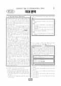

문제지

전국연합학력평가 · 시·도교육청 주관
2026년 6월 고2 학력평가 국어 1등급컷은 원점수 89점(추정), 표준점수 최고점은 142점입니다.
원점수 1등급컷은 공식 발표값이 아니라 EBSi·입시기관 값입니다. 등급별 값은 등급컷 표, 출처 구분은 데이터 원칙에 있습니다.

시험지를 먼저 풀어 보세요. 등급컷·표준점수·난이도는 흐리게 가려 뒀어요.
| 등급 | 원점수 | 표준점수 | 백분위 |
|---|---|---|---|
| 1 | 89 | 133 | 96 |
| 2 | 82 | 127 | 89 |
| 3 | 72 | 118 | 77 |
| 4 | 59 | 107 | 59 |
| 5 | 43 | 93 | 39 |
| 6 | 28 | 80 | 23 |
| 7 | 20 | 73 | 10 |
| 8 | 17 | 71 | 4 |
등급별 컷 · 입시기관 2곳 원점수 추정 종합(EBSi·대성마이맥) · 만점 100점
| 등급 | 표준점수 이상 | 인원(명) | 비율 |
|---|---|---|---|
| 1 | 133 | 15,132 | 4.6% |
| 2 | 127 | 21,611 | 6.57% |
| 3 | 118 | 40,383 | 12.28% |
| 4 | 107 | 58,717 | 17.86% |
| 5 | 93 | 64,052 | 19.48% |
| 6 | 80 | 54,774 | 16.66% |
| 7 | 73 | 41,288 | 12.56% |
| 8 | 71 | 20,521 | 6.24% |
| 9 | 56 | 12,321 | 3.75% |
시·도교육청 공개 자료
출처: 시·도교육청이 공개한 전국연합학력평가 성적 분석·통계자료(공개 자료 보기).
EBSi 응답자 기준으로 가장 많이 틀린 문항은 7번(2점)이고, 오답률은 71.9%입니다. 상위 15문항 중 2문항은 정답보다 한 오답을 고른 사람이 더 많았습니다(7번: 정답 ① 28.1%, ⑤ 35.9%). 오답률 50%를 넘은 문항은 5개입니다.
| 순위 | 문항 | 배점 | 오답률 | 정답 | 많이 고른 오답 |
|---|---|---|---|---|---|
| 1 | 7번 | 2점 | 71.9% | ① | ⑤ 35.9% |
| 2 | 14번 | 3점 | 70.5% | ⑤ | ③ 34.7% |
| 3 | 9번 | 2점 | 59.7% | ② | ① 27.3% |
| 4 | 19번 | 2점 | 58.8% | ④ | ③ 22.2% |
| 5 | 39번 | 2점 | 51.4% | ② | ④ 31.4% |
| 6 | 18번 | 2점 | 43.6% | ① | ③ 13.3% |
| 7 | 5번 | 2점 | 43% | ② | ④ 30.4% |
| 8 | 17번 | 3점 | 41.7% | ⑤ | ③ 19.4% |
| 9 | 40번 | 2점 | 40.2% | ③ | ④ 19.9% |
| 10 | 21번 | 2점 | 39.5% | ③ | ④ 15.2% |
| 11 | 13번 | 2점 | 38.7% | ⑤ | ③ 18.3% |
| 12 | 8번 | 2점 | 37% | ② | ⑤ 15.9% |
| 13 | 22번 | 3점 | 36.7% | ① | ④ 10.4% |
| 14 | 30번 | 2점 | 35.9% | ③ | ④ 12.3% |
| 15 | 42번 | 3점 | 35.3% | ④ | ⑤ 11.3% |
EBSi 가채점 응답자 기준 · 전 문항 중 오답률 상위 15문항
출처: EBSi 역대 등급컷·오답률 공개 화면. 가채점에 참여한 EBSi 이용자 응답이라 전체 응시자 정답률과는 다를 수 있습니다.
발행 기관: 시·도교육청(전국연합학력평가). 파일 위치: 이 사이트가 보관한 사본. 저작권은 발행 기관에 있습니다. 원본과 다르거나 게시 중단이 필요하면 연락처로 알려 주세요. 등급컷 출처 구분은 데이터 원칙에서 설명합니다.
막대 색은 역대 대비 난이도 · 진한 막대가 이 시험 · 막대를 누르면 그 회차로 이동
| 회차 | 1등급컷 | 표점 최고 | 1등급 표점 | 난이도 |
|---|---|---|---|---|
| 6월 학평2026년 고2이 시험 | 89 | 142 | 133 | 보통 |
| 3월 학평2026년 고2 | 87 | 148 | 136 | 보통 |
| 10월 학평2025년 고2 | 90 | 140 | 132 | 쉬움 |
| 9월 학평2025년 고2 | 86 | 147 | 134 | 보통 |
| 6월 학평2025년 고2 | 89 | 144 | 134 | 보통 |
| 3월 학평2025년 고2 | 89 | 146 | 136 | 쉬움 |
| 10월 학평2024년 고2 | 84 | 151 | 136 | 매우 어려움 |
| 9월 학평2024년 고2 | 89 | 144 | 134 | 쉬움 |
| 6월 학평2024년 고2 | 87 | 149 | 137 | 어려움 |
| 3월 학평2024년 고2 | 77 | 163 | 137 | 매우 어려움 |
국어는 교육청 채점 결과 1등급 구분 표준점수가 133점, 최고점이 142점(356명)으로 3월(136점, 148점)보다 쉬웠습니다. EBSi 가채점 응답자 기준 오답률 50%를 넘은 문항은 5개였습니다.
가장 많이 틀린 7번(2점, 71.9%)은 용언이 활용할 때 변하지 않는 '어간'과 실질적 의미를 나타내는 '어근'을 구분하기 어려운 사례를 선생님의 설명으로 분석하는 문항, 9번(59.7%)은 '내가 사랑하는 친구의 동생을 만났다' 같은 문장의 중의성을 쉼표·조사·어순 등으로 해소하는 학습 활동 문항이었습니다.
독서는 서로 다른 나라 당사자 사이의 무역계약과 물품 인도 조건(11~15번), 식물의 생장·발달·노화를 조절하는 호르몬(16~19번), 인간이 세계를 코드화한 것을 '매체'로 본 빌렘 플루서의 매체 철학(20~23번)이었습니다.
14번(3점, 70.5%)은 한국 기업 대표가 미국 수출 회사에 EXW·FOB·CIF 조건의 가격을 받고 'FOB LA항' 조건으로 거래하는 <보기>를 이해하는 문항, 19번(58.8%)은 광원 쪽으로 줄기가 굽고 눕힌 화분에서 줄기가 휘는 식물 관찰 일지를 해석하는 문항이었습니다.
문학은 부모의 장사를 치를 길이 없어 우는 남매의 「부용전」(31~34번), 도깨비시장에서 생선 장사를 하는 아버지가 등장하는 전상국 「겨울의 출구」(35~38번), 이방익 「홍리가」와 정약용의 「부암기」(39~42번), 최영철 「일광욕하는 가구」와 손택수 「저문 들판이 새들을 불러모은다」(43~45번)였습니다. 「홍리가」와 「부암기」의 공통점을 고르는 39번(51.4%)이 문학에서 가장 많이 틀린 문항이었습니다.
화법·작문은 '니은, 리을'처럼 한글 자음자의 명칭이 정해진 원리를 다룬 발표(1~3번), 학생회실에 방치된 폐현수막 처리 방안 토의(4~6번), 복도에 공용 간식을 두는 일을 다룬 건의문(24~27번), 멸종 위기에 처한 구상나무를 알리는 글(28~30번)이었습니다.